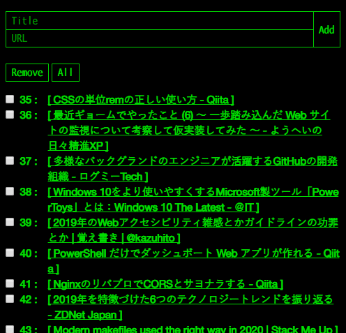

Ruby で自分だけのブックマークアプリを作ってみた
「はてなブックマーク」や「Pocket」など、ログインして利用する系のブックマークサービスを使いたくない場面が出てきたので、オレオレブックマークアプリというか、オレオレ Read It Later アプリを作ってみた。
CentOS の GCE インスタンスに、Apache と Ruby をインストール。Apache 上で Ruby を CGI として動作させられるよう設定変更した上で、単一の Ruby スクリプトファイルだけで動作するアプリを組んだ。Rails やサードパーティモジュールは使っていない。
ソースコードは以下。
どんなアプリ？
ベースの考え方は、PHP で作った「オレオレ Twitter」アプリに近い。
予め「クレデンシャルファイル」にアクセス用パスワード文字列を書いておき、リクエストパラメータで指定したパスワードをチェックすることで、自分だけがアクセスして閲覧できるアプリにしてある。
パスワードを指定してアクセスすると、次のような画面になる。

上はブックマークの追加フォーム。下に追加してあるブックマークが一覧表示されている。チェックボックスをチェックしていけば削除できる、という仕組み。
パスワードを指定しないと、ブックマーク一覧の閲覧もできないし、ブックマークの追加や削除もできない。
今回も DB は使わず、テキストファイルでブックマーク一覧やシーケンス値を管理している。シーケンスの仕組みは、複数のブックマークを一括削除する際に、削除する行を特定する目的で用意した。
ブックマークの追加・削除の処理を呼び出す時も GET メソッドでリクエストする乱暴な仕様だが、コレのおかげで「ブックマークレット」によるブックマーク追加が可能になっている。
以下のようなブックマークレットを作れば、閲覧中のページをブックマークに追加できるという仕組みだ。
javascript:(() => {
window.open(
'http://【HostName】/index.rb?credential=【Credential】&mode=add&title='
+ encodeURIComponent(document.title)
+ '&url='
+ encodeURIComponent(document.URL)
);
})();
コレがやりたくてこのアプリを作った。
Ruby CGI 実装に際しての学習メモ
コレまで自分は Rails 中心で、生 Ruby をほとんど触ってきてこなかったので、今回のようにある種レガシーな Ruby CGI を実装してみると、新たな学びも多かった。思いつくままに学習メモを書き残しておこうと思う。
命名規則
- メソッド名、変数名 : スネークケース
- 定数 : アッパースネークケース (1文字目が大文字なら定数になる)
- グローバル変数 :
$始まりの変数名にする
文字列のシングルクォートとダブルクォート
Perl や PHP、Bash などと同じく、シングルクォートだと変数展開がされず、ダブルクォートだと変数展開される。
文字列中に変数を書くには、#{変数名} と書く。
ヒアドキュメント
以下のように書く。コレもシングルクォートで <<'EOL' とすると変数展開されず、ダブルクォートで <<"EOL" とすると変数展開される。
print(<<'EOL')
hoge
fuga
EOL
print(<<"EOL")
#{some_variable}
foo
bar
EOL
Ruby スクリプトファイル自体のエンコーディングを確認する
puts __ENCODING__
# 基本は 'UTF-8' と出る
テキストファイルの読み書き
#!/usr/bin/ruby
File.open('./ruby-test.txt', 'w:UTF-8') do |text|
text.puts('Hello')
end
第2引数で r:UTF-8 (読取専用) とか a+:UTF-8 (読取・追記) とかのように、:UTF-8 とエンコーディングを指定すること。コレを忘れると、全角文字を含むファイルを開こうとした時にエラーになる。
新規で空ファイルを作るには FileUtils.touch() という関数が使える。
require 'fileutils'
unless File.exist?(BOOKMARKS_FILE_PATH)
FileUtils.touch(BOOKMARKS_FILE_PATH)
end
unless は if ! 条件。条件を満たさない場合…というブロックになる。
do end ブロックとブレース {} によるブロックの違い
以下の2つの書き方は、同じ結果が得られる。
File.open(TARGET_FILE, 'r:UTF-8') do |file|
puts(file.read)
end
File.open(TARGET_FILE, 'r:UTF-8') { |file|
puts(file.read)
}
do end でブロックを作るのと、ブレース {} でブロックを作るのと、違いはあるのだろうか。
以下の記事が見つかったが、イマイチ違いが分かんなかった。
and・or より &&・|| が優先される、という話もあるし、do end より {} が優先されると理解しておいたらいいのかな。
エスケープ関連は cgi モジュールを使うと良い
require 'cgi'
# CGI オブジェクトをグローバル変数として定義する
$cgi = CGI.new
# リクエストパラメータは以下のように取得できる
raw_my_param = $cgi['my_param']
# アンエスケープする
my_param = CGI.unescape(raw_my_param)
# レスポンスの頭に `content-type` と改行コード2つを書いておくこと
print("content-type: text/html\n\n")
# HTML 出力用にエスケープする
puts("<p>#{CGI.escapeHTML(some_text)}</p>")
printは末尾に改行コードなし、putsは末尾に改行コードが勝手に付くCGI.escapeHTML()とか、CGI.unescape()とかの関数が良い感じCGI.unescape()しても Tab 文字は変換されないみたいだったので、gsub("\t", ' ')(スペースに置換) だとかgsub("\t", '%09')(%エンコーディングに置換) だとか、適宜置換処理を追加しておいた
cgi モジュール便利。
ENV でサーバ関連の情報が引っこ抜ける
ENV.keys で、取得できる環境変数のキー一覧が確認できる。ENV['SERVER_NAME'] でホスト部分とか。
スクリプト自体のファイル名を取得する
File.basename(__FILE__) で、index.rb だとか、自身のファイル名だけを取得できる。
Trim 系の関数 : strip と chomp
strip: 文字列の前後の改行コード、スペース、タブを削除するchomp: 文字列の前後の改行コードのみを削除する
1行しかないテキストファイルから文字列だけ取り出したい時は、my_text.chomp で改行コードだけ消せば十分か。
文字列結合
単純に str1 + str2 と + で結合しても良いが、<< で += 的な追記ができる。
my_text = ''
File.open(TARGET_FILE, 'r:UTF-8') { |file|
file.each_line { |line|
my_text << line
}
}
puts(my_text)
ループ中の continue は next
next で continue 相当。
以上
かなり作りが甘いところもあるが、自分が欲しかったモノは作れたし、自分しか使わないのでコレでおけおけ。